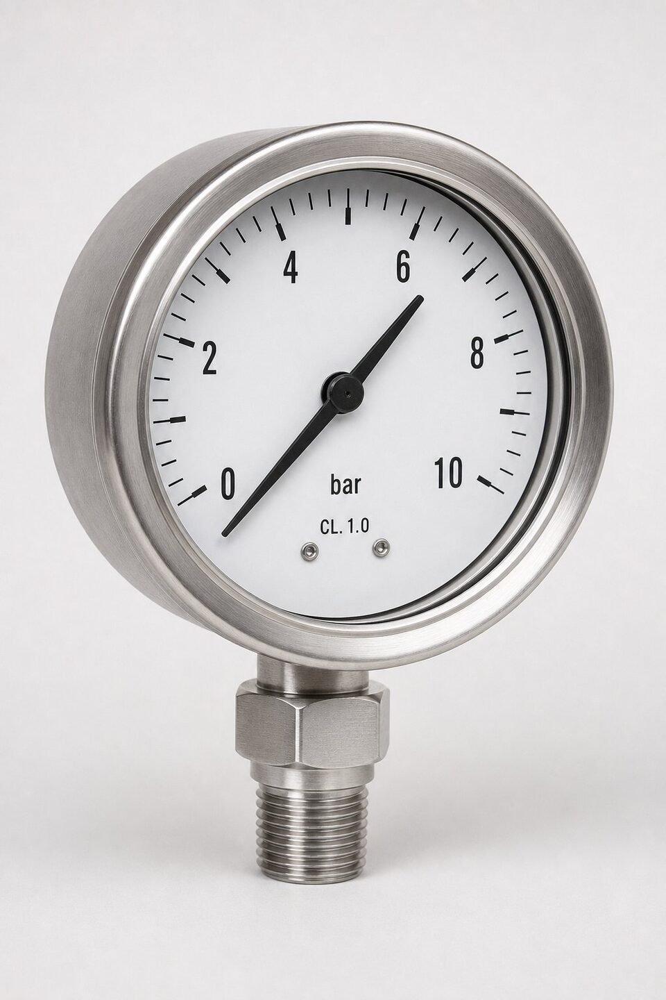

اصل اندازهگیری: لوله بوردون
رایجترین فناوری گیج فشار مکانیکی، لوله بوردون است: یک لوله خمیده با مقطع بیضی که با اعمال فشار داخلی تمایل به باز شدن دارد. این حرکت بسیار کوچک، از طریق یک مکانیزم چرخدندهای به چرخش عقربه روی صفحه مدرج تبدیل میشود. سادگی این اصل، گیج فشار را به ابزاری اقتصادی، مستقل از برق و قابل اتکا تبدیل کرده است؛ به همین دلیل همچنان در کنار ترانسمیترهای دیجیتال، پرمصرفترین ابزار پایش فشار در صنعت است. استاندارد (ASME B40.100) همین خانواده از گیجها را پوشش میدهد و الزامات طراحی، دقت، ایمنی و آزمون آنها را مشخص میکند. درک این اصل ساده کمک میکند محدودیتهای گیج مکانیکی را نیز بشناسیم: حساسیت به ارتعاش، دمای محیط و فشارهای ضربانی که همگی در انتخاب و نصب باید مدیریت شوند.

کلاسهای دقت و انتخاب رنج
کلاس دقت گیج، حداکثر خطای مجاز آن را به درصد رنج کامل مشخص میکند؛ هرچه عدد کلاس کوچکتر، دقت بالاتر. در پایش عمومی فرایند، کلاسهای اقتصادی معمول انتخاباند، اما در نقاطی که فشار به ایمنی یا کیفیت محصول مرتبط است و همچنین در آزمونهای قانونی، کلاسهای بالاتر لازماند. انتخاب رنج نیز به اندازه کلاس اهمیت دارد: تجربه رایج این است که فشار کاری در حدود دوسوم رنج گیج قرار گیرد تا هم عمر مکانیزم حفظ شود و هم خوانش در بخش دقیق مقیاس باشد. برای فشارهای ضربانی یا نوسانی شدید، گیج با رنج بزرگتر یا همراه با وسایل میرایی انتخاب میشود. ذکر فشار عادی، حداکثر و شرایط نوسان در استعلام، پایه پیشنهاد درست است.
ویژگیها: پرکننده، ایمنی و اتصال
- پرکننده گلیسیرین یا سیلیکون: پایداری عقربه در محیطهای پرلرزش و کاهش فرسودگی.
- طراحی ایمنی: صفحه تخلیه یا دیواره جداکننده برای محافظت در صورت پارگی لوله بوردون.
- جنس لوله بوردون: برنز برای سرویسهای عمومی و استیل برای سیالات خورنده.
- نوع اتصال: شعاعی یا پشتی، با سایز و استاندارد رزوه متناسب نقطه نصب.
- درجه حفاظت: برای محیطهای مرطوب یا گرد و غباردار، محفظه با آببندی مناسب.
در سرویسهای خاص، الزامات ایمنی سختگیرانهتری وجود دارد. برای سیالات سمی یا قابل اشتعال، گیج باید با طراحی ایمنی مناسب و در صورت نیاز به همراه دیافراگم سیل انتخاب شود تا نشتی به محیط رخ ندهد. در اکسیژن و سایر گازهای اکسیدکننده نیز گیجهای مخصوص با ممنوعیت کامل روغن و گریس استفاده میشوند، چون آلودگی چربی در اکسیژن تحت فشار خطر انفجار دارد. این نکات کوچک، مرز بین یک انتخاب حرفهای و یک ریسک پنهاناند و باید در برگه مشخصات هر نقطه نصب ثبت شوند.
نصب و نگهداری
نصب درست، نیمی از دقت گیج است. گیج باید در نقطهای نصب شود که از ضربه قوچ و نوسانات شدید محافظت گردد؛ استفاده از لولههای سیفونی برای بخار و وسایل میرایی برای پالسهای فشار، عمر گیج را چند برابر میکند. جهت نصب نیز بر خوانش اثر دارد و باید مطابق طراحی گیج انجام شود. در نگهداری، برنامه کالیبراسیون دورهای بر اساس اهمیت نقطه تعریف میشود: نقاط ایمنی با فواصل کوتاهتر و نقاط صرفا پایشی با فواصل بلندتر. نشانههای هشداردهنده مانند عقربه گیرکرده، صفحه مهآلود یا نشتی در اتصال باید جدی گرفته شوند، چون گیج خراب نه تنها اطلاعات غلط میدهد، بلکه در لحظه خطا ممکن است بیاثر باشد.
نکات استعلام و خرید
در استعلام، رنج فشار، سایز صفحه، کلاس دقت موردنیاز، نوع اتصال و جهت آن، متریال بخشهای خیس بر اساس سیال، پرکننده موردنیاز و درجه حفاظت را ذکر کنید. اگر گیج برای سرویس خاصی مانند اکسیژن، گازهای ترش یا محیطهای خورنده است، حتما قید کنید تا مدل مناسب پیشنهاد شود. در پروژههای بزرگ، یکدستی برند و ظاهر گیجها در یک واحد هم از نظر نگهداری و هم از نظر ظاهر تاسیسات ارزش دارد و بهتر است در مشخصات الزام شود. برای نقاط حساس، کالیبراسیون کارخانهای با گواهی را درخواست نمایید و برنامه قطعات مصرفی مانند شیشه و عقربه را نیز در نظر بگیرید.
عیبیابی رایج گیجهای فشار
بیشتر مشکلات گیجها در بهرهبرداری قابل پیشبینیاند. عقربهای که در صفر مانده یا خوانش پایینتر از واقع نشان میدهد، اغلب ناشی از گرفتگی مسیر اتصال یا آسیب مکانیزم بوردون بر اثر ضربه قوچ است. نوسان مداوم عقربه در خطوط پالسدار بدون میراکننده طبیعی است و با نصب وسایل میرایی برطرف میشود. مهآلودگی شیشه نشانه ورود رطوبت به محفظه است و در گیجهای پرشده، حباب کوچک گلیسیرین معمولا بیخطر است اما نشتی مایع باید جدی گرفته شود. در نقاط ایمنی، هر نشانه خطا باید به تعویض یا کالیبراسیون فوری منجر شود، نه به ادامه بهرهبرداری با خوانش مشکوک.
جمعبندی
گیج فشار بر اساس الزامات (ASME B40.100)، ابزاری ساده اما حساس است که انتخاب درست آن از رنج و کلاس دقت شروع و به نکات ایمنی و نصب ختم میشود. با ذکر کامل شرایط سرویس در استعلام، رعایت نکات میرایی و حفاظت و کالیبراسیون دورهای، خوانش فشار قابل اتکایی در اختیار بهرهبردار قرار میگیرد که پایه تصمیمهای ایمنی و فرایندی واحد است.
سوالات رایج
استاندارد (ASME B40.100) چه چیزی را پوشش میدهد؟
الزامات گیجهای فشار مکانیکی شامل طراحی، کلاسهای دقت، ایمنی، نصب و آزمون؛ این استاندارد مرجع اصلی انتخاب گیج در بسیاری پروژههای صنعتی است.
کلاس دقت گیج چیست و چگونه انتخاب میشود؟
حداکثر خطای مجاز گیج به درصد رنج اندازهگیری؛ برای پایش عمومی کلاسهای اقتصادی کافی است و برای کاربردهای دقیقتر یا قانونی، کلاسهای بالاتر لازماند.
گیج پرشده با گلیسیرین چه مزیتی دارد؟
مایع داخل محفظه، ارتعاش عقربه را میگیرد و خوانش را در محیطهای پرلرزش پایدار میکند؛ همچنین از فرسودگی اجزای داخلی میکاهد.
گیج فشار چه زمانی باید تعویض یا کالیبره شود؟
در بازههای کالیبراسیون تعریفشده، یا هنگام مشاهده خطای خوانش، گیرکردن عقربه، آسیب شیشه یا نشانههای نشتی؛ در نقاط ایمنی، برنامه سختگیرانهتری لازم است.
مطالب مرتبط
با ذکر رنج، سایز و شرایط نصب، گیج فشار متناسب از برندهای معتبر عرضه میشود.
مشاهده صفحه محصول ← ثبت RFQ همین محصولتامین این تجهیزات را به پیشرو تجهیز فرتاک بسپارید
شرکت پیشرو تجهیز فرتاک تامینکننده تخصصی تجهیزات صنعتی برای پروژههای نفت، گاز، پتروشیمی، فولاد و نیروگاهی است. برای دریافت پیشنهاد فنی و قیمت، استعلام (RFQ) خود را ثبت کنید تا کارشناسان مهندسی فروش در کوتاهترین زمان پاسخ دهند.
- تامین ابزار دقیقگیجها و ترانسمیترهای فشار
- تامین تجهیزات صنایع نفت و گازپکیج مواد مطابق وندورلیست